Building a better understanding of seasonal influenza vaccine responses.
Kelsey Florek MDTP Seminar 03 Feb 2017
Slides available at:
www.k-florek.net/talks
vaccines are one of the greatest public health achievements of the 20th century
why do we need influenza vaccines
influenza virus
- classified by glycoprotein spikes
- hemagglutinin (HA)
- neuraminidase (NA)
- current influenza A viruses: H1N1 and H3N2
- influenza naming convention (A/Texas/50/2012)
- A - type (A,B,C)
- Texas - geographic location of isolation
- 50 - random identifier
- 2012 - year of isolation
antigenic drift
antigenic drift - mechanism for variation involving the accumulation of mutations in genes that code for proteins that are under selective pressure by antibodies
H3N2 HA evolution

vaccine effectiveness dependent on antigenic match

vaccines currently available
- trivalent
- A/California/7/2009
- A/Hong Kong/4801/2014
- B/Brisbane/60/2008-like
- quadrivalent
- A/California/7/2009
- A/Hong Kong/4801/2014
- B/Brisbane/60/2008-like
- B/Phuket/3073/2013-like
- inactivated
- live attenuated intranasal
- new adjuvanted vaccine using MF59 a squalene oil and water emulsion
- cell based manufacture
seasonal vaccine production cycle

hemagglutination inhibition

hemagglutination inhibition

hemagglutination inhibition
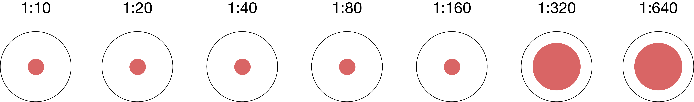influenza seroprotection
- seroprotection - subjects who have an antibody titer that is likely to result in protection from influenza challenge
- HI titer ≥ 1:40
- HI titer ≥ 1:110
seasonal influenza vaccines rely primarily on neutralizing antibody responses
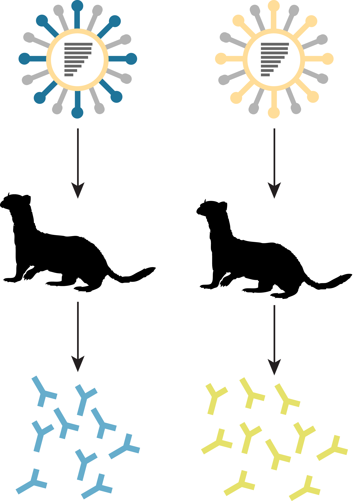seasonal influenza vaccines rely primarily on neutralizing antibody responses

adapted from ECDC

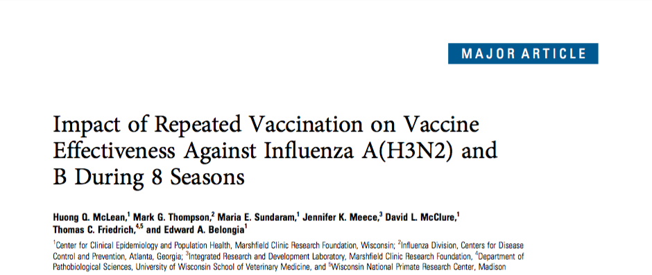
determining the vaccine strain 2013-14
determining the vaccine strain 2014-15
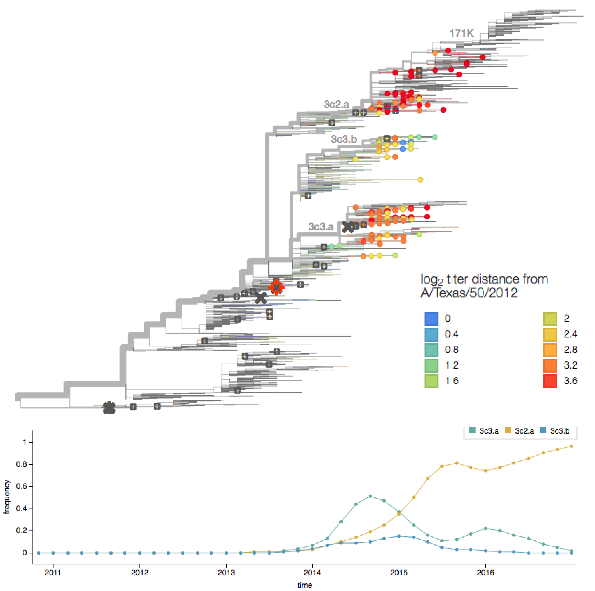seasonal influenza vaccines rely primarily on neutralizing antibody responses
adapted from ECDC


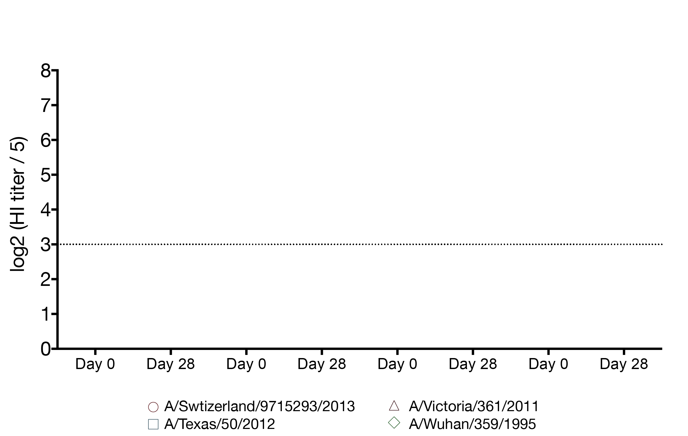
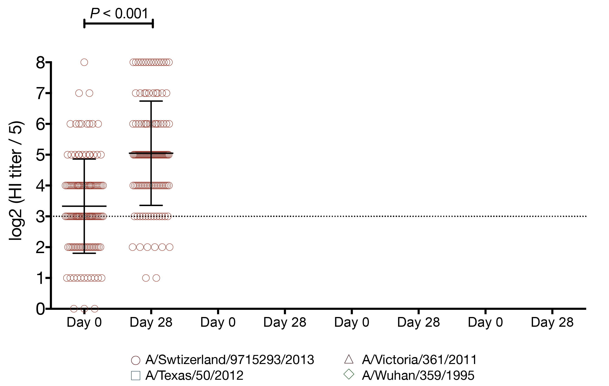
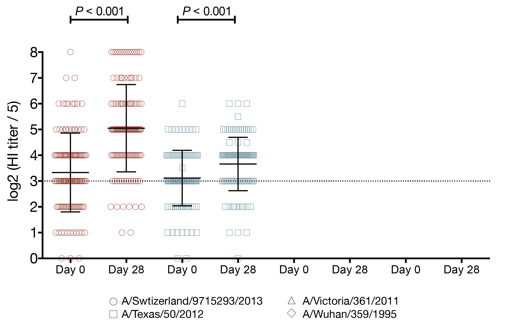
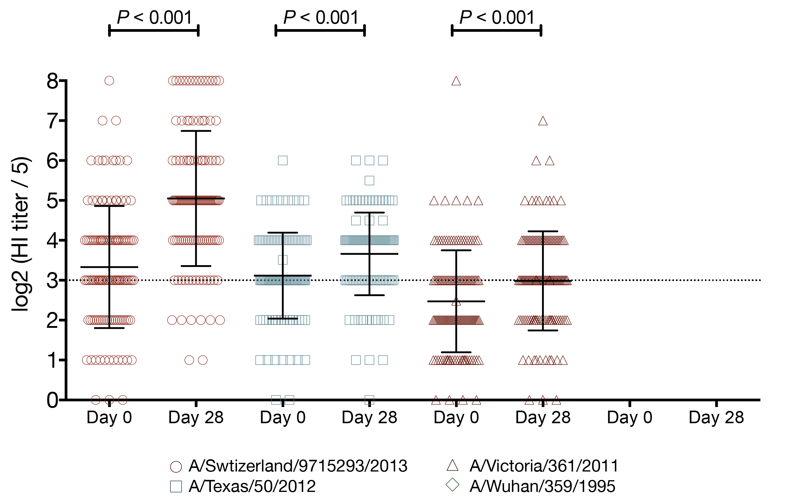
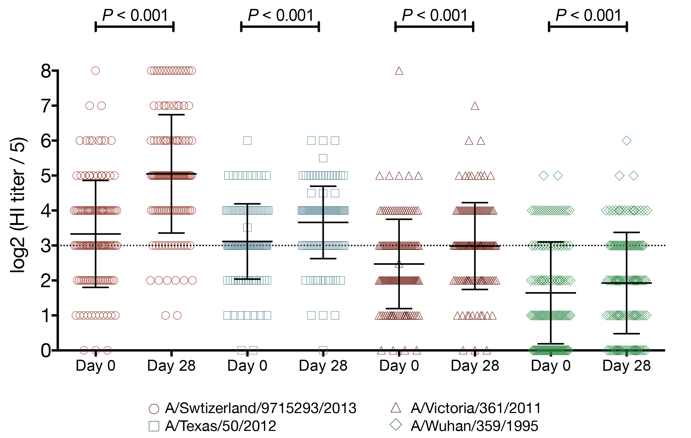
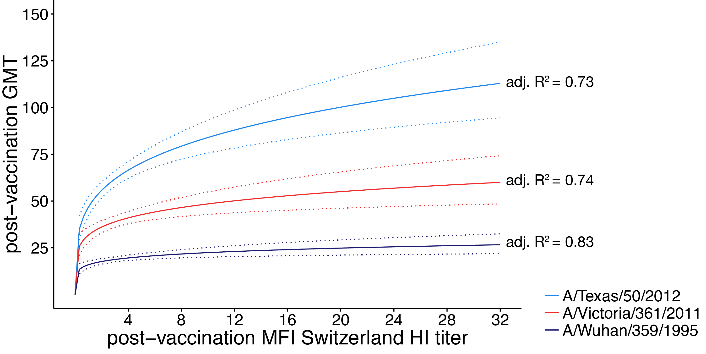
distance between US cities
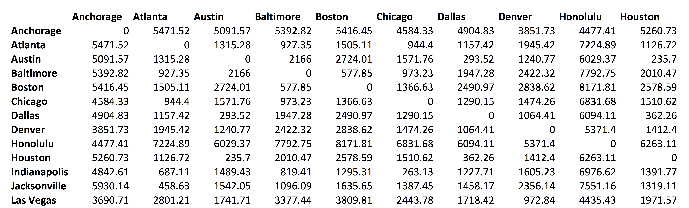multidimensional scaling
multidimensional scaling
antigenic cartography
antibody landscape
antibody landscape over time
vaccines boost responses against previously circulating strains
using a unique situation to further investigate influenza back-boost
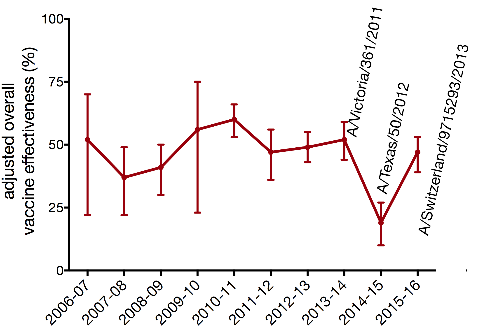vaccination with a strain from a novel antigenic cluster boosts antibodies against both the vaccination strain and historical influenza strains in children
study design
- cohort study
- children aged 5-17 years
- subjects recruited on previous exposure
- 2014-15 IIV and uninfected n ~ 80
- 2014-15 flu A infected n ~ 20
- 2010-15 unvaccinated and uninfected n ~ 80
- 2014-15 vax: A/Texas/50/2012
- 2014-15 circ: A/Switzerland/9715293/2013
study design
- tested 4 viruses
- A/Switzerland/9715293/2013
- A/Texas/50/2012
- A/Victoria/361/2011
- A/Wuhan/359/1995
- 2014-15 vaccination status
- unvaccinated: 34 (27%)
- vaccinated IIV: 77 (62%)
- vaccinated LAIV: 13 (11%)
- PCR confirmed influenza
- 2012-13: 10 (8%) A/Texas/50/2012-like
- 2014-15: 22 (18%) A/Switzerland/9715293/2013
using regression to model and predict qualitative and quantitative variables
- examines the relationship between the response (dependent) variable and predictor (independent) variables
- linear regression: quantitative response
- logistic regression: qualitative response
- predict responses while adjusting for confounding factors
how multiple regression works
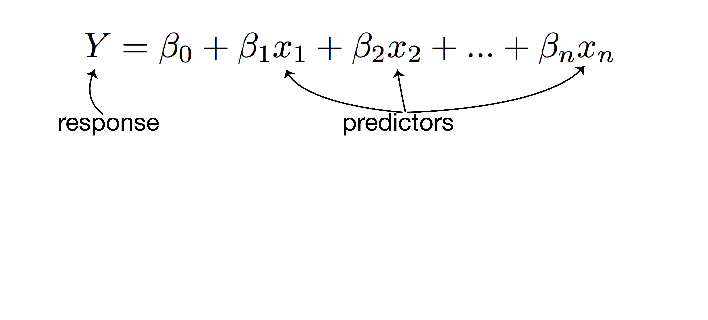how multiple regression works
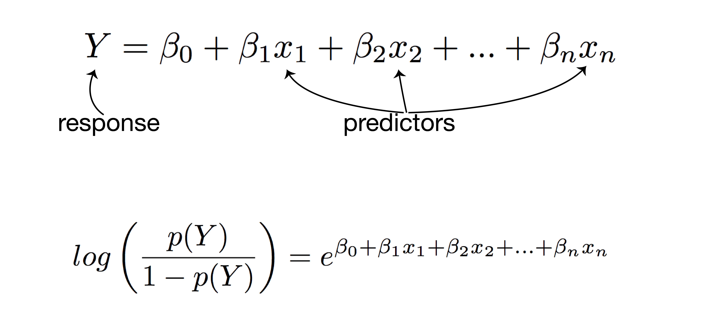linear regression analysis
- response: post-vaccination HI titer
- predictors:
- mean fold increase against A/Switzerland/9715293/2013
- baseline HI titer
- age
- high-risk condition
- vaccination status
- PCR confirmed infection status
logistic regression analysis
- response: post-vaccination seroprotection
- predictors:
- mean fold increase against A/Switzerland/9715293/2013
- baseline HI titer
- age
- high-risk condition
- vaccination status
- PCR confirmed infection status
vaccination increases the number of seroprotected subjects against the previous season strain
- A/Texas/50/2012 HI titer ≥ 1:40
- 29 subjects had baseline HI titer < 1:40
- 15 (52%) of those subjects had a post-vaccination HI titer ≥ 1:40
- A/Texas/50/2012 HI titer ≥ 1:110
- 114 subjects had baseline HI titer < 1:110
- 12 (11%) of those subjects had a post-vaccination HI titer ≥ 1:110
vaccination increases the number of seroprotected subjects against the previous season strain
- (A/Texas/50/2012 HI titer ≥ 1:40) 2-fold increase in HI titer against A/Switzerland/9715293/2013
- 13.1-fold increased odds of seroprotection
- 95% CI 2.74 - 235
- P = 0.01
- (A/Texas/50/2012 HI titer ≥ 1:110) 2-fold increase in HI titer against A/Switzerland/9715293/2013
- 2.9-fold increased odds of seroprotection
- 95% CI 1.64 - 5.76
- P = 0.0008
conclusions
- working around influenza exposure in humans is incredibly tricky
- seasonal influenza vaccination provides a small but real boost to antibodies against historical antigens
- few participants were boosted to an HI titer ≥ 1:110 against A/Texas/50/2012 suggesting the historical boost may not be clinically significant for children
future directions
- understand the mechanism behind back-boost
- stimulation of memory B cells recalling historical antibodies
- activation and maturation of B cells producing cross-reactive antibodies
- further examine the clinical significance of the back-boost
the broader impact
- development of novel influenza vaccines exceedingly difficult
- influenza vaccine correlates of immunity are not well understood
- better methods of evaluating and designing current vaccines could provide better protection
acknowledgements
- Friedrich Lab
- Luiza Campos
- Kat Braun
- Louise Moncla
- Marshfield Clinic Research Foundation
- Edward Belongia
- Huong McLean
- Jennifer King
funding provided by:
SciMed Graduate Research Scholars
Molecular Biosciences Training Grant